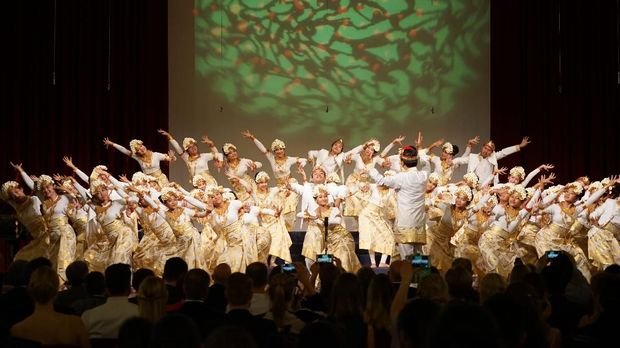

Paduan Suara Anak Indonesia Toreh Sejarah di Eropa
publish : 04/05/2021
oleh : Harmoni Sadajiwa
Kelompok paduan suara anak The Resonanz Children's Choir (TRCC) kembali mengharumkan nama Indonesia di kancah internasional. Kelompok itu dinobatkan sebagai pemenang European Grand Prix for Choral Singing, sebuah perhelatan yang telah berlangsung selama 30 tahun.
Pada gelaran yang dilangsungkan di Maribor, Slovenia, Sabtu (21/4) lalu, TRCC bersaing dengan para juara umum tahun lalu dari berbagai kompetisi paduan suara di Eropa. Tak ayal, kemenangan kelompok padus di bawah pimpinan Avip Priatna pada European Grand Prix for Choral Singing ini lantas mengukir sejarah baru TRCC di dunia paduan suara. Ini merupakan kali pertama kelompok paduan suara dari Indonesia menjadi juara EGP.